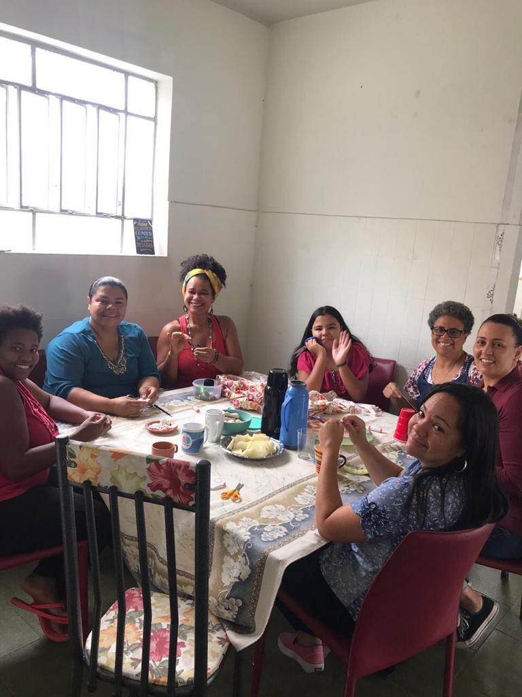
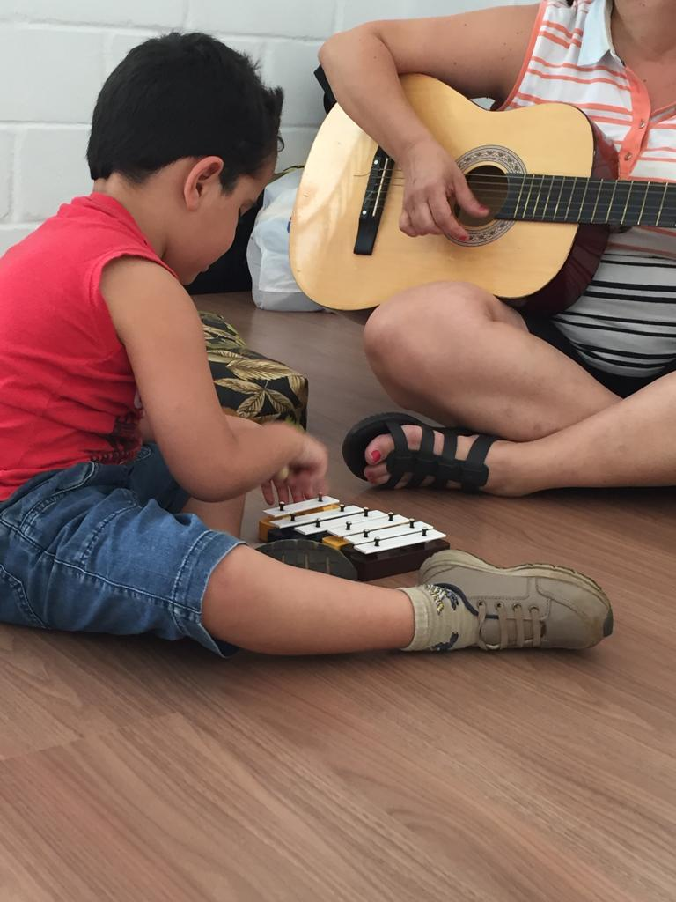

A casa da Musicoterapia, nasceu das ações conjuntas dos musicoterapeutas Gabriel Estanislau e Abner Davi, visando assistir famílias que nāo possuem condições de arcar com custor de um atendimento particular para pacientes com Transtorno do Espectro Autista (TEA).
Nossas ações iniciaram por Rodas de conversas, palestras e oficinas, organizadas de forma voluntária por musicoterapeutas, músicos e produtores culturais. A equipe era composta por Gabriel Estanislau, Abner Davi, Henriane Camile e Larissa Nunes
Atualmente estamos com um endereço fixo em Belo Horizonte (MG), realizando atendimentos em grupos e individuais, além de atendimentos domiciliares, palestras, workshops, oficinas e qualquer outro tipo de evento que seja agregador a nossos pacientes.
Pensando em meios de deixar as suas razões de existir, a Casa expõe sua Missāo e visāo de Futuro da seguinte maneira:
Promover atendimento musicoterapêutico de excelência, fomentando o desenvolvimento e a divulgaçāo da Musicoterapia e dos musicoterapeutas do estado de Minas Gerais para suprir o défcit de serviços no estado.
Torna-se um centro de referência em Musicoterapia, sendo reconhecida pelos seus serviços e acessibilidade em Minas Gerais até 2014.
Com o passar do tempo, a musicoterapia tem sido uma escolha com recorrência em ascensāo para pacientes diagnosticados com TEA. Pela musicoterapia o paciente pode se comunicar de forma nāo verbal exprimindo seus sentimentos e, como nas sessões o importante é participar e nāo somente alcançar algum resultado, ela desenvolve a autoestima.

Os benefícios listados anteriormente podem ser alcançados à longo prazo, mas já com o início do tratamento,
percebe-se avanços.
Nossas sessões de musicoterapia podem ser realizadas de forma individual ou em grupo, e sempre sāo conduzidas
por um musicoterapeuta certificado. Os objetivos sāo específicos para cada paciente, mesmo em sessões em
grupo.